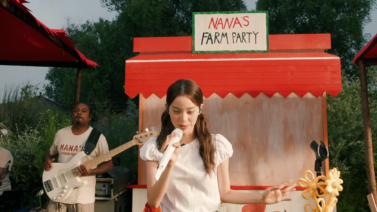
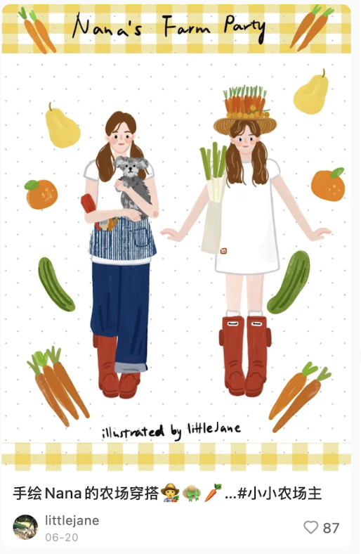
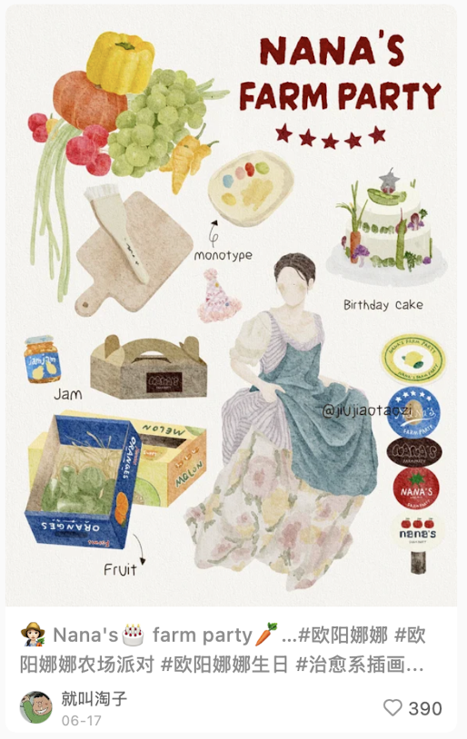
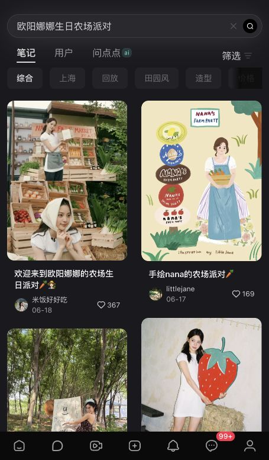
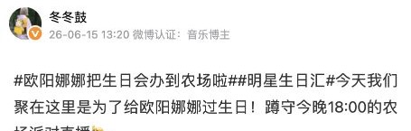
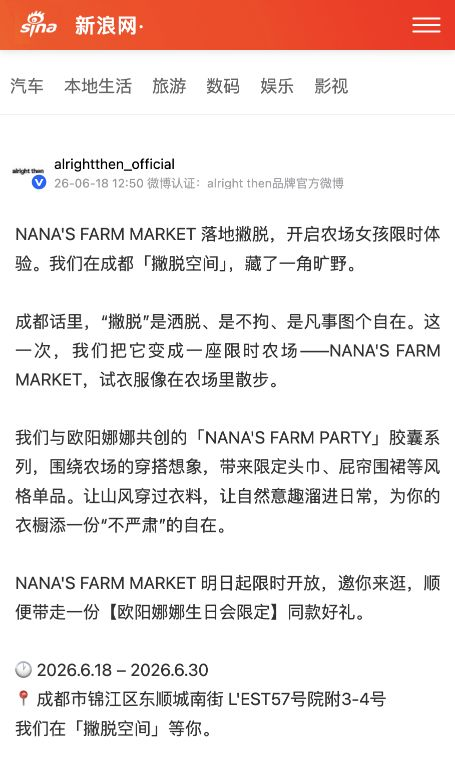

ON-SITE CREATOR
派对成为来宾镜头里的内容。
青争菜心 · 2026.06.19一场在农场里的生日派对。


我们把娜娜的生日想象变成一场可以走进去的农场派对，也让现场的快乐通过直播传递给更多人。
从蛋盒邀请函，到可以走进去的农场，再到一场贯穿派对的直播。
创意指导
农场不是一个简单的背景。生日数字、蔬果图形、包装式装置与手写感招牌，出现在主视觉、拍照场景和直播镜头里，让宾客一眼走进 Nana 的派对世界。

一种不只停留在主视觉上的设计语言：标识、导视和农场符号，让每个接触点都属于同一个世界。


以上两张取自项目方案，用于展示创意过程；具体落地内容以现场影像为准。
派对从收到邀请开始
纸质收据写下派对的日期与节目清单，鸡蛋被放进带标识的蛋盒里。邀请本身就像从农场带回的一件小礼物，把活动主题提前递到嘉宾手中。


围绕「26」设计视觉线索，让主题在派对开始前先被看见。

预热的「26」，也出现在娜娜自己的微博里。

活动制作
户外的红色农场小屋、草地演出区与室内厨房，让派对能在多个场景间自然转换。视觉装置既是宾客的拍照点，也进入了直播画面。

从农场小屋，到厨房里的生日时刻。

沿着镜头，走进农场的不同角落。
从红色农场小屋走进派对现场。
直播制作
直播镜头在包装式视觉装置、户外乐队与室内厨房间切换，让远端观众也能经历派对的不同场景。下方三条片段均来自项目直播切片原文件。


直播当天，娜娜在微博邀请大家走进农场派对。

同一场派对，在不同镜头里继续展开。
从参与者的视角看派对
到场创作者以合影、造型和现场体验记录 Farm Party。
派对成为来宾镜头里的内容。
青争菜心 · 2026.06.19
和 Nana 一起庆祝 26 岁。
N!NG · 2026.06.15
农场导视，也成了合影的现场。
rini · 2026.06.19
厨房里，连狗狗也一起入镜。
olivialsr · 2026.06.17生日当天，如何成为公共话题
话题先于直播出现。镜头把农场带到屏幕上，现场来宾随后继续发布自己的记录。

直播前，#欧阳娜娜把生日会办到农场啦# 已出现在公开微博帖中。

农场小屋、草地舞台与厨房进入生日直播。
现场创作者用自己的照片把这场相聚带到社交平台。
派对之后，娜娜继续分享生日照片与农场片段。
派对结束，农场仍有人来。粉丝自发回到同一场地，寻找娜娜生日派对留下的痕迹。




线下发生，线上延续
一场直播，接着由来宾、粉丝与品牌延伸成更多人的 Farm Party。
次回放观看
娜娜官方微博直播页面公开快照；这是回放观看次数，不是去重观众人数或当晚峰值。
转发
评论
点赞




现场相遇，持续分享。

以上为公开页面与已核实原帖的可见记录。热搜上榜位置及分时观看数据尚无可核查的原始记录，未计入本页数字。